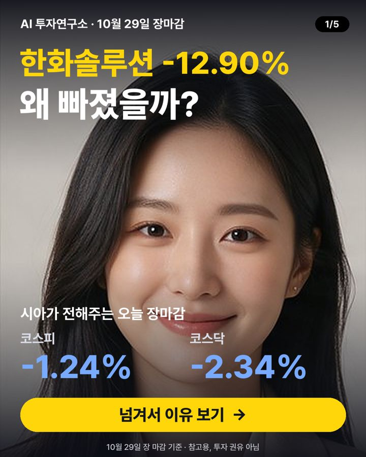

10월 29일 장마감 요약 — 코스피 -1.24%, 코스닥 -2.34%
2026-10-29 장 마감 기준 · 진행 윤시아 (시장 흐름)

오늘 코스피는 5,937.66로 -1.24%, 코스닥은 753.23로 -2.34% 마감했어요. 대형주 78종목 중 25개가 오르고 53개가 내렸어요. 원/달러 환율은 1,339원이에요.
지수 흐름
| 종가 | 하루 | 1주 | 1달 | |
|---|---|---|---|---|
| 코스피 | 5,937.66 | -1.24% | +7.30% | -13.58% |
| 코스닥 | 753.23 | -2.34% | -1.42% | -11.36% |
많이 오른 종목
- 메리츠금융지주 +7.32% · 132,000원
호재외국인 투자자 5일 연속 순매수로 주가가 상승했어요 - 한미약품 +5.89% · 395,500원
호재국산 비만약 ‘에페’ 처방 시작과 저가 경쟁력으로 기대감 상승 - 우리금융지주 +4.71% · 31,150원
호재3분기 순이익이 사상 최고치를 기록했어요 - 하나금융지주 +4.16% · 120,300원
호재하나벤처스가 민간모펀드 2차 GP 8곳에 선정돼요 - 삼성화재해상보험 +3.82% · 653,000원
호재AI 핀테크 스타트업과 협업해 보험 심사 등 사업을 확대했어요
많이 내린 종목
- 한화솔루션 -12.90% · 23,300원
악재석유·화학 부문 적자와 납기 지연 우려로 주가가 하락했어요 - 두산에너빌리티 -8.55% · 56,700원
뉴스관련 기사: 두산에너빌, 미국 뉴스케일파워 SMR 원자로 수주 (KBS) - 삼성에스디에스 -8.50% · 204,500원
중립3분기 실적 컨퍼런스콜 보안 사업 올해 매출 17% 성장 전망 내년 로봇 오케스트레이션 플랫폼 선봬 삼성 계열사 현장서 실증 … - 레인보우로보틱스 -7.24% · 378,000원
뉴스관련 기사: 삼성SDS, AI 보안·RX 키운다…내년 로봇 플랫폼 출시 앞둬 (매일경제) - SK이노베이션 -6.65% · 130,500원
악재◆ '흑자' 삼성SDI vs '적자' SK온 전기차 판매 부진이 지속되는 가운데 국내 배터리업계의 3분기 실적이 에너지저장장치…
누가 사고 팔았나 (순매수)
| 외국인 | 기관 | 개인 | |
|---|---|---|---|
| 코스피 | +1,221억 원 | -4,132억 원 | -429억 원 |
| 코스닥 | -1,210억 원 | -740억 원 | +2,058억 원 |
내일 체크 포인트
- 외국인 흐름 — 오늘 코스피에서 +1,221억 원 순매수
- 국제유가 — 최근 한 달 +8.22%
- 미국 10년 금리 4.97% · 공포지수 VIX 17.1
- 20일 이동평균선 위에 있는 대형주 17/78종목
이 글은 공개된 시세·수급 데이터와 그날 뉴스 제목을 정리한 참고 자료이며 투자 권유가 아닙니다. 시세는 거래소 종가 기준이고, 투자 판단과 결과의 책임은 본인에게 있습니다.